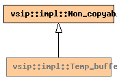

Global Namespace
Inheritance Tree
Inheritance Graph
Name Index
template <
typename
T>
class
vsip
::
impl
::Temp_buffer
File:
../../../vsip/core/temp_buffer.hpp

-
Public Member functions
constructor
Temp_buffer
(std::ptrdiff_t
size
)
destructor
~Temp_buffer
()
T*
data
()
const
-
Private Data members
T*
data_
std::ptrdiff_t
size_
bool
is_alloc_
Generated on Sat Apr 17 11:14:12 2010 by
synopsis
(version 0.12)
 synopsis
synopsis